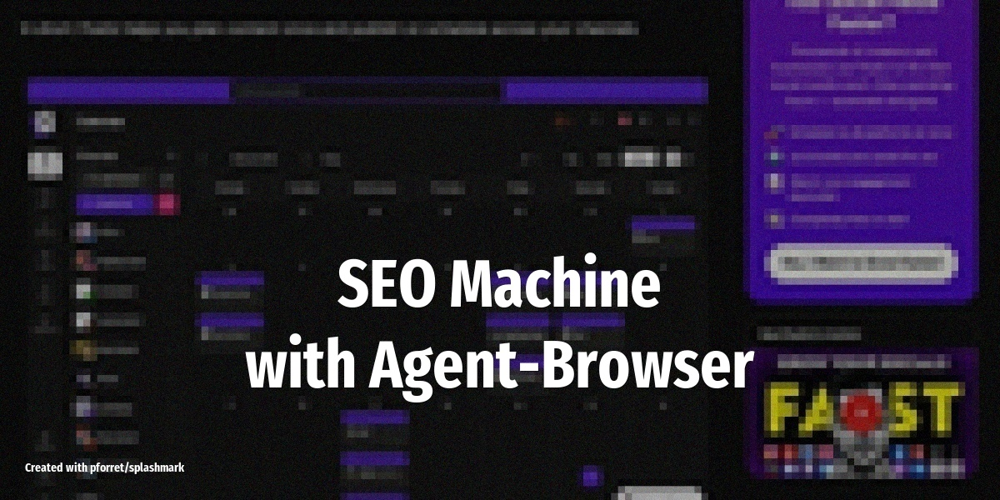

Build a Powerful SEO Machine¶
Turn OpenClaw into a complete SEO content engine that researches keywords, analyzes competitors, captures real screenshots from your product, and publishes original articles to your CMS -- all without AI slop.

What it does¶
As Nevo David explains: most AI-generated SEO content fails because it reads like "just running a search on ChatGPT." The difference here is that OpenClaw controls a real browser, so it can do things no automation tool can: log into SEMRush, take screenshots of your actual product dashboard, and scrape Reddit threads for genuine insights.
The agent handles the full SEO workflow:
- Keyword research: logs into SEMRush or Ahrefs via agent-browser to find keyword opportunities and competitor gaps
- Content sourcing: scans Reddit, Hacker News, and niche forums for real opinions and data points -- not LLM-generated filler
- Screenshot capture: navigates your own SaaS dashboard or product and takes actual screenshots to embed in articles
- Article writing: produces SEO-optimized posts with proper heading structure, keywords, and original visuals
- CMS publishing: pushes finished drafts to WordPress (or any CMS with a CLI/API) as pending posts for review
The result is content that ranks because it contains things competitors can't easily replicate: real screenshots, community insights, and first-party data.
Setup overview¶
- Install the agent-browser skill -- a Playwright-based browser fully controlled by OpenClaw. Disable the built-in browser skill to avoid conflicts
- Create a browser profile and log into your accounts:
Log into SEMRush/Ahrefs, Google Search Console, your CMS, and your SaaS dashboard
agent-browser --profile ~/.seo-profile open --headed - Install your CMS connector skill (WordPress, Ghost, or use Postiz CLI for multi-channel)
- Write a SOUL.md covering your niche, target audience, brand voice, and SEO guidelines
- Tell OpenClaw to write an SEO article using the agent-browser with your profile, specifying the niche and target topic
- Once you're happy with the results, schedule daily runs via cron:
0 6 * * * openclaw run seo-article-writer
Clawflow¶
keyword_research (agent-browser → SEMRush/Ahrefs)
→ competitor_scan (browse top-ranking pages)
→ content_source (scan Reddit/HN for real takes)
→ screenshot_capture (navigate your product, take screenshots)
→ article_draft (write with real data + screenshots)
→ cms_publish (push to WordPress as draft)
→ notify (Slack/Telegram summary)
LLM and tools¶
Uses Claude 4.5 Sonnet for writing and agent-browser (Playwright) for all browser interactions. The key advantage over standard automation is that agent-browser runs a real browser session with your logged-in profiles, so it can access authenticated dashboards, interact with JavaScript-heavy sites, and capture pixel-perfect screenshots.
For cloud deployment, you can connect agent-browser to a Browserless Docker instance with a mobile proxy from BrightData. But for most setups, running locally on a Mac Mini is simpler and more reliable.
Tips¶
- Avoid AI slop: the whole point is original content. Always source from real community discussions and your own product -- never let the agent just summarize other AI articles
- Screenshots sell: articles with real product screenshots rank better and convert more. Have the agent capture 3-5 screenshots per post showing actual features in action
- Review before publishing: push everything as drafts. Add your own voice and verify any claims before going live
- Track what ranks: pair this with a weekly analytics check to see which articles perform, then refine your SOUL.md and keyword strategy based on real data
- Scale gradually: start with one article per day, measure results for a week, then increase volume
Source¶
Based on @wickedguro (Nevo David) on X (Feb 23, 2026)